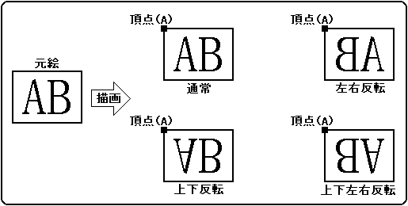
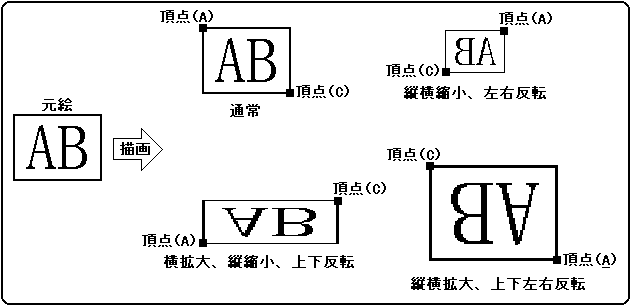
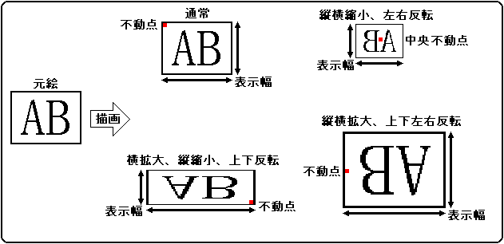
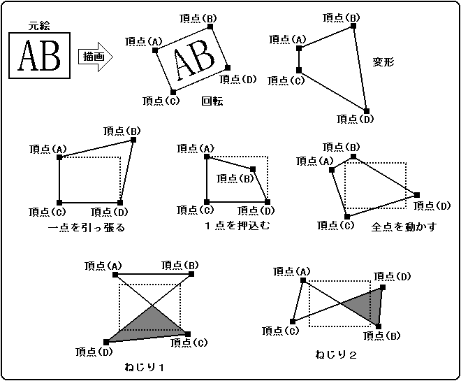
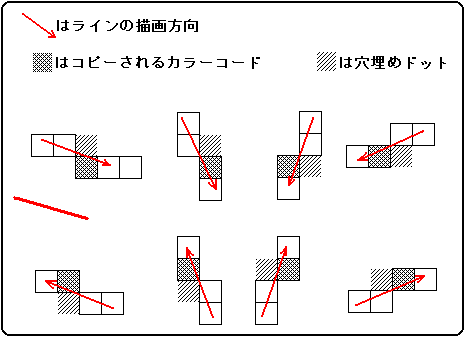

★HARDWARE Manual
★VDP1ユーザーズマニュアル
★HARDWARE Manual
★VDP1ユーザーズマニュアル
分類 | パーツ名 | 機能 | 定義方法 | |
パーツ | テクスチャパーツ | 定形スプライト | キャラクタ、 | 1頂点と読み出し方向 |
矩形スプライト | キャラクタ、 | 2頂点と読み出し方向、または | ||
変形スプライト | キャラクタ、 | 4頂点と読み出し方向 | ||
ノンテクスチャパーツ | ポリゴン | 四角形、 | 4頂点 | |
ポリライン | 四角形 | 4頂点 | ||
ライン | 直線 | 始点と終点 |
図1.2 定形スプライト

図1.3 矩形スプライト(座標2点指定)

図1.4 矩形スプライト(不動点指定)

図1.5 変形スプライト

図1.6 穴埋め処理

★HARDWARE Manual
★VDP1ユーザーズマニュアル